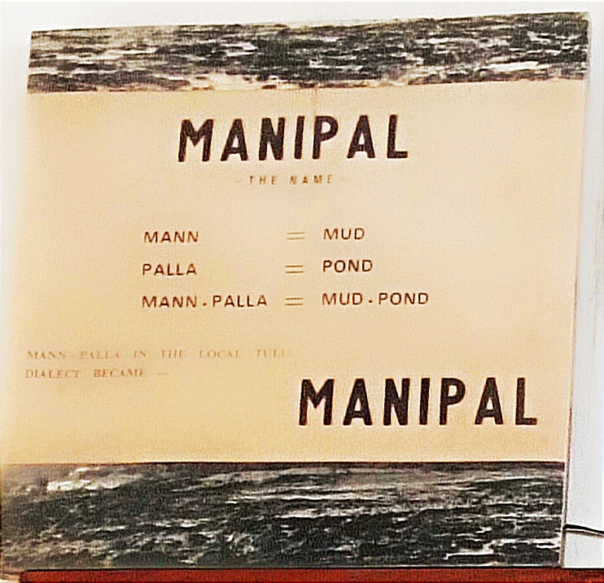

Smriti Bhavan, as its name suggests, is a museum dedicated to the memory of Dr. Tonse Madhav Ananth Pai, showcasing his numerous achievements over the years. The building was once Dr. Pai's residence and has now been transformed into a museum, offering visitors a glimpse into his life and work.
Dr. T.M.A. Pai was an Indian physician, educationist, banker and philanthropist. He lived here for 40 years. It is a museum, where several valuable materials depicting the life and work of Dr. Pai are gathered and preserved.
It is a unique museum in the sense that unlike many other museums which house things belonging only to the past, here are the belongings of a great soul whose influence still plays a significant role in shaping the present-day Manipal.
It is a decent, small but elegant house and today it houses the memory of Dr. Pai in the form of photographs, preserving his office room, bedroom, his medical instruments and whatever he did in his lifetime.
The house was constructed in the year 1938. Dr. Pai resided in this house along with his wife and children. The House is a two-story building that includes multiple living rooms, and a separate office room.
After the passing of Dr. Pai and his wife, the house was converted into a museum to serve as a source of inspiration to future generations.
A.S.Ramakrishna, who had retired from the Indian Postal Service and was also a friend of Dr.Pai, undertook the responsibility of converting Dr.T.M.A. Pai's house into a museum as per the wish of the family members.
In 1984 the museum was opened to public.
When the house was converted into a museum, a small library was created in one of the rooms, it contains books that Dr. Pai used to read.
Manipal is a town located in the Udupi district of the Indian state of Karnataka. Manipal city is full of high rise buildings, institutions of international standards and a population hailing from all over the world.
But in the early 20th century, Manipal was a barren land with nothing but rocks and hills. After rainy season nothing would grow here , but wild grass .However growth of a town since then has been astonishing. All these was made possible because of vision and effort of one person, Dr. Thonse Madhava Anantha Pai, or T.M.A. Pai.
There is a large mud pond which the rains fill up during monsoon. 'Mannpalla' of the local Tulu vernacular meaning mud pond became Manipal, the modern name for the region atop the hill.
Manipal, was a region with no significant attractions or developments, has now become known for its various institutions, schools, colleges, banks, and factories. Buses, departing every minute and brimming with people on the sides, hospital wards filled to overflowing with patients and their relatives, buzzing groups of medical and engineering students, workers employed in industries, hundreds of young men and women working in the nationalized Syndicate Bank, a score of languages spoken by the young men and women students from different parts of the country and the world studying in the colleges here-from Malaysia, East Africa, US and Iran. Also hundreds of houses, several schools and colleges, churches, temples and mosques have risen here.
There is no other place in India where modern amenities are so densely congregated as here: education, banking, business, employment and health care. Manipal offers solution to the three major ills of the country; banking and industry fight against poverty, education eradicates ignorance and the hospital cures illness.
This transformation was brought about by the vision and tireless efforts of a single individual, Dr. TMA Pai . He realized the importance of higher education and healthcare for the people of his region.He went on to establish numerous institutions and hospitals, including the Manipal Academy of Higher Education and the Kasturba Medical College Hospital. Under Dr. T.M.A. Pai's leadership, Manipal became a hub of education and healthcare. Today, the town is home to a number of institutions, including medical colleges, engineering colleges, and management institutes.
| 30-4-1898 | Born in Kallianpur (D.K.) Parents: Tonse Ananta Pai and Yashoda. |
| 1906-1911 | Education: Hindu Higher Elementary School, Kallianpur. |
| 1911-1914 | Taluk Board Middle School, Udupi. |
| 1914-1916 | Christian High School, Udupi. |
| 1916-1919 | St. Aloysius College, Mangalore. |
| 1920-1925 | Madras (Degree in Medicine and Surgery ) |
| 1921 | Married to Sharada (Kamakshi Bai). |
| 1925 | Started Medical Practice at Udupi. |
| 1925 | Started Canara Industrial & Banking Syndicate Ltd.(Syndicate Bank) with brother U.A.Pai. |
| 1933 | Settled at Manipal. |
| 1942 | Formation of the Academy of general Education, Manipal |
| 1949 | Mahatma Gandhi Memorial College, Udupi. (First College) |
| 1953 | Kasturba Medical College, Manipal. (First College for Professional Education) |
| 1959-1962 | Public Service Awards by the State Government. |
| 1964-1965 | Governor, Rotary International District 317. |
| 1965 | Awarded "Padmashri" by the President of India |
| 1974 | Degree of 'Doctor of Science' (Honoris Causa) by Mysore University. |
| 1979 | Vidyadhiraja Award by Gokarna Parthagali Mutt. |
| 29-5-1979 | Expired. |
Madhava Pai belonged to the Gowda Saraswatha Brahmin community. Ananth Pai, Madhava Pai's father, was a small shop keeper in Brahmavara. His elder brother, Mukund Pai, Madhava Pai's uncle, was a lawyer in Udupi. Ananth Pai had four sons-they were Purushothama, Upendra, Madhava and Raghunath. Later they came to be known in society as P. A. Pai, U. A. Pai, T. M. A. Pai and T. R. A. Pai. A sister lived till her end under the care of the brothers. Madhava Pai was born on April 30, 1898 to mother Yashoda, who came from Kallianpur of Tonse village. The father lived in the town of Brahmavara, across the river. Unfortunately in 1908 Ananth Pai had an untimely death and Yashoda, with her children, sought shelter in her father's house in Kallianpur. Yashoda was a pious lady who wanted nothing more than for her children to receive a good education and grow up to be good people.
Their uncle Mukund Pai was a resident of Udupi was very convenient for the children to continue their studies. The four brothers could go to the High School in Udupi from the uncle's house. They had their elementary education in the Catholic School and Hindu Higher Elementary School of Kallianpur. The eldest brother Purushothama Pai opened a small shop in Udupi in 1910. Madhava Pai used to assist him in the shop for a few hours during the day. The brother was also a supporter of the Congress Movement. He kept a store of national books, indigenous goods and Khadi clothes. A state of dependence on others was wholly distasteful to the Pai family.
Before becoming a great planner and builder Madhava Pai had obtained very valuable experiences in life. This was what carved out his path for later years. He learned patience, perseverance, self-confidence, and the ability to approach people of all ages. He also had direct experience with the difficulties of rural life.-Madhava Pai absorbed all these virtues, almost by chance, during the intervening period. After his Intermediate class he was about to take up the B.A. course. At this juncture, he heard that his old school, Kallianpur Hindu School, was in danger of closing. To save the school, he asked people in his village for donations, but was only able to collect a small amount of money. So he traveled to Mumbai ,where he convinced some wealthy people to donate Rs. 4,000 to the school. In short, Madhava Pai worked hard to save his old school and succeeded in raising funds from rich people in Mumbai.
He returned to Kallianpur with the money and gave new life to the school. He accepted donations in any form, as timber for instance, persuaded cart owners to transport it to the school site free of cost, inspired old students of the school to teach without remuneration; he himself taught in like manner. Besides, he composed songs to be used as teaching material in the class room. The school opened again and won the admiration of the people. In honour of this event the people of the village awarded him a gold medal later when he was eighty. Madhava Pai was decorated with 80 medals by his well-wishers and admirers but he set greater store by this first medal which was responsible for the shaping of his destiny.
Having got a strong building for the Hindu Primary School in Kallianpur and obtaining Government's support to run it Madhava Pai proceeded to Madras to study medicine. In five years he successfully completed the course and returned home. He sought his mother's permission to go to Hong Kong where, he said, the prospects of earning were bright. The mother objected: `Let the people here benfit by your knowledge. There is no need for you to go so far away and earn money for us'. Madhava respected his mother's opinion and chose to stay . It did not take much time for him to make a name as an efficient surgeon. Surgery was a rare treatment in those days. Dr. Madhava Pai showed great competence and came to be known as a skilful surgeon. Major surgery was then conducted only in the Government Hospital.
In those days when there were misgivings about vaccination against smallpox, Dr. Pai persuaded people to get themselves vaccinated, explaining to them its usefulness in preventing the disease. That effective and convincing arguments play a great role in winning over the hearts of people and in enlisting their support for any development project, if someone is skilled at communicating and presenting their ideas in a compelling way, they can overcome even the most resistant opposition. Dr. Pai realized in those early years of his medical practice.
Dr. Pai continued his medical practice for nearly fifteen years. During this time, he also helped in organizing the Canara Industrial and Banking Syndicate which was started by his brother Upendra Pai.He was needed to convince people, by his persuasive talk, that a new banking establishment was a necessity for the community.
The founding of the bank was a form of protest. A local, commercial bank had refused to-grant small loans to retail traders or to people without influence. The small man's needs were never considered by the banks. So the Pais started thinking on the line of establishing a bank to cater to small traders and such other ordinary people. The second provacation was a pathetic situation which Dr. Pai witnessed during his medical practice. Once he had to supply a sari to a mother, who, after childbirth, had no spare sari to put on. Such a hopeless situation can be remedied only if even the poor were taught lessons in saving. This was the reason which compelled Dr. Pai to step into the banking sector. He realized that providing economic security to people was as important as treating their diseases.. This realization led him to devote more and more time to the organization of banking activities in the region. Finally he gave up his medical practice in favour of banking and gifted away his surgical appliances to a relative.
The period between 1920-1939 was one of economic depression all over the world. Despite these unfavorable conditions, the Syndicate Bank was established by the Pais with a meager capital of only Rs. 8,000/-. However, mobilizing shares proved to be a challenging task. In fifteen months only 484 shares had been bought. The rich were not helpful, the poor were helpless. To offer security to the share holders Dr. Pai insured his own life for Rs. one lakh. He went up and down South Kanara, North Kanara and Malnad districts to persuade the rich landlords to support his venture. Eventually, the Syndicate Bank became a model in the sphere of effecting programmes for the welfare of the common man.."No man is too small for our bank"-this principle was adopted as a motto first by the Syndicate Bank, which was willing to accept deposits in dribles of five rupees and advance loans of five rupees. The chit funds which were running prosperously outside the banking sector were brought within the fold of banking activity by the Syndicate Bank. It set apart, in its very first Board Meeting, Rs. 2,000/- for helping small scale industries like weaving. It opened branches in rural areas to spread the message of saving among the people.
In the initial years of the banking business, the greatest problem was to keep the operation costs to the minimum. Dr. Pai invented his own remedy for the problem. He brought together unemployed youngsters, failed graduates and those who could not pursue their higher studies after secondary school. He found that they were willing to accept a job with low pay because they were content with having a job, even if it did not offer high salaries or benefits. Dr. Pai trained them himself in banking law and practice, and some of them became later eminent officers of the bank .The initial capital of Rs. 8,000/- had created assets of more than Rs. 1,000/- crores. The Head Office of the Bank was shifted to a new multistoried building in Manipal and all the directors and the employees of the bank heartily supported the welfare schemes drawn by Dr. Pai. His bank was not an institution meant only for financial transactions. It took on itself several projects beneficial to the public. Education, Music, Yakshagana, Literary Meets, every social and cultural activity found a patron in Syndicate Bank.
Dr. Pai had great respect for the missionaries who ran educational institutions. But he had never thought in terms of starting and running educational institutions on his own. Dr. Pai founded "The Academy of General Education" in 1942 to provide guidance to anyone interested in the field of education. The Academy's goal was to bring a revolutionary change in the education system, which at the time, did not focus on vocational training. Instead, the Academy aimed to align education with the needs of society by suggesting the opening of schools that could provide instructions in various vocational fields such as embroidery, sewing, pottery, glassmaking, tile making, music, photography, salesmanship, clerkship, radio repair, bee-keeping, poultry farming, and more. The Academy believed that such vocational training would not only provide employment opportunities for those with the relevant knowledge but also enable others to take up useful occupations.
Today the hill of Manipal is a centre of education, a citadel of knowledge. Most of the structures and most of the population here are connected with education in one way or the other. In 1933 Dr. Pai bought 107 acres of land on top of this rocky hill, which at that time had no takers. Soon he established an institution called Canara Land Investment for the development of this barren land. At a time when land was plentiful it was considered foolish to invest money in land. The Pai brothers established a few diverse small scale industries here: a tile factory, an agricultural improvement society, a T.B. sanatorium (1934) and a weaving factory. In 1936 an elementary school was opened in this lonely place and was soon closed down. Similar was the fate of a Hindu Orphanage begun in 1938. But the Higher Primary School and High School started in 1939 (this has now become the Manipal Junior College) have withstood the challenges of circumstance.
Dr. Pai's decision to start a medical college in Manipal, was a challenging taskdue to various obstacles and uncertainties. Dr. Pai's decision to establish a private medical college was initially met with adverse comments and doubts from critics and even some of his own friends. However, Dr. Pai remained determined and confident in his vision, and the Kasturba Medical College was eventually established in 1953. Over the years, the Kasturba Medical College gained national and international recognition, and students from all over the country and abroad began to enroll, despite the increasing fees. The college has produced thousands of medical graduates, dental surgeons, pharmacists, and healthcare professionals over the past 30 years. Dr. Pai's success in establishing the college inspired others to follow in his footsteps, despite the challenges involved in setting up a private medical college.
Dr. Pai's vision and hard work led to the establishment of Kasturba General Hospital, which is attached to the Kasturba Medical College in Manipal. . For giving fullfledged medical education in Manipal a hospital with equal facilities was a necessity. a hospital is a burden or an expensive investment when it comes to its maintenance. Dr. Pai achieved even this seemingly impossible task during his life time.
Today, the Kasturba General Hospital is an ultra-modern hospital that can accommodate thousands of inpatients at a time and provides specialized treatment in surgery, radiotherapy, diagnosis, and hospitalization. It has gained a reputation for providing good service at reasonable cost, attracting patients not only from neighbouring districts but also from nearby states such as Kerala and Maharashtra. The establishment of this hospital is evidence to Dr. Pai's dedication to providing quality healthcare and education in Manipal.
Dr. T.M.A. Pai, the visionary entrepreneur who played a significant role in the growth and development of Manipal, established several educational institutions in the town. Some of the notable educational institutions set up by him include:
On the line of M.G.M. College Dr. Pai established five more Arts and Science Colleges:
In 1960 the Bhuvanendra College of Karkala was established; in 1963 the Vijaya College of Mulki and the Bhandarkars' College of Kundapur; in 1965 the Mahaveera College of Mudabidri and the J.C.B.M. College of Sringeri. Each one was a community college built with the co-operation of local citizens.
Apart from these, Dr. T.M.A. Pai also founded several other educational institutions, including schools and colleges, across Karnataka and Kerala.
The operating hours of Smriti Bhavan are from 9.30 am until 1 pm, and from 2.30 pm until 6pm.
Closed on Sunday.
There is no entry fees.
Developed by team 'We Interns'